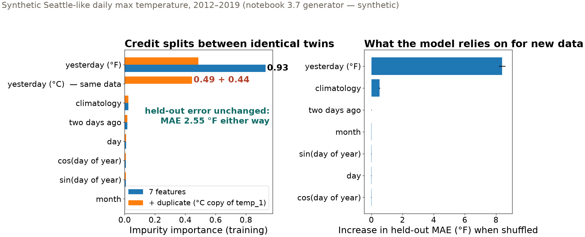
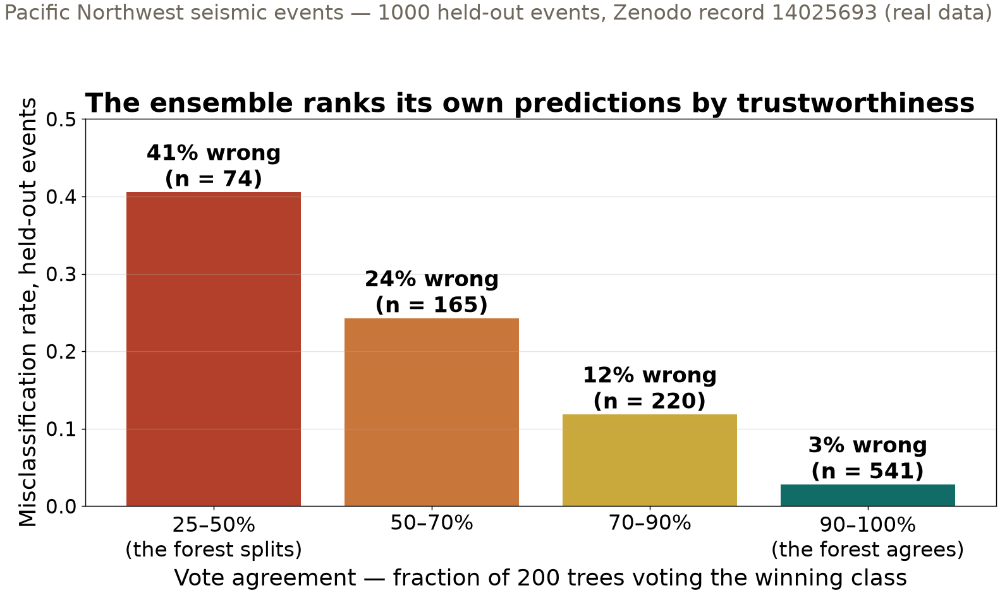

Session 17 · Fri Nov 6 · Book sections 3.7 + 3.9 (3.10 flipped)
🌲
Ensembles of trees win on feature tables.
When the forest points at a feature — or votes with one voice — what exactly is it telling you?
Reading: 3.7 Random forests · 3.9 Ensemble learning
📖 The source: bagging + feature randomness = the forest, with out-of-bag error and variable importance built in.
Breiman, L. (2001). Random forests. Machine Learning, 45(1), 5–32.
✓ Doing it right: forests mapping land cover from satellite imagery — accuracy, robustness, and importances used with care.
Rodriguez-Galiano, V. F., Ghimire, B., Rogan, J., Chica-Olmo, M., & Rigol-Sanchez, J. P. (2012). An assessment of the effectiveness of a random forest classifier for land-cover classification. ISPRS Journal of Photogrammetry and Remote Sensing, 67, 93–104.
✗ The trap, measured: impurity importance is biased by feature type and correlation — rankings that mislead unless repaired.
Strobl, C., Boulesteix, A.-L., Zeileis, A., & Hothorn, T. (2007). Bias in random forest variable importance measures: illustrations, sources and a solution. BMC Bioinformatics, 8, 25.
📖 Where ensemble disagreement goes next: many models, read as an uncertainty estimate — for deep networks too.
Lakshminarayanan, B., Pritzel, A., & Blundell, C. (2017). Simple and scalable predictive uncertainty estimation using deep ensembles. Advances in Neural Information Processing Systems 30 (NeurIPS 2017).
The field is actively writing this story — new papers land monthly. These four anchor today’s ideas.
Two ensemble philosophies: average away variance, or chip away at error. Boosted trees are the 2026 default for feature tables.
3.25 °F predict the calendar-day average — climatology baseline, MAE
2.55 °F random forest of 300 trees, held-out MAE
Synthetic Seattle-like daily max temperature (notebook generator): seasonal cycle + weak warming trend + day-to-day persistence. Gradient boosting: 2.53 °F.
The margin over climatology — not the score alone — is the evidence that the lag features carry real information.

Add a unit-converted copy of one feature: its “importance” halves (0.93 → 0.49 + 0.44) while held-out error doesn’t move. Importance is bookkeeping, not physics.

Vote spread is a free uncertainty estimate: 41% wrong when the forest splits, 3% when it speaks with one voice. Route the split votes to an analyst.
| Across all seven ensembles (held-out) | range |
|---|---|
| Test accuracy | 0.87 – 0.90 |
| Recall: noise | 0.92 – 0.94 |
| Recall: surface event | 0.90 – 0.94 |
| Recall: earthquake | 0.87 – 0.89 |
| Recall: explosion | 0.77 – 0.84 |
Every ensemble misses explosions two to three times as often as other classes — and no aggregate accuracy says so. Report per-class recall.
| Idea | The question it answers | Geoscience use |
|---|---|---|
| Forest vs baseline | did the model learn beyond climatology | 2.55 vs 3.25 °F daily max temperature |
| Permutation importance | what does the model rely on, on new data | which waveform features drive a detection |
| Vote spread | which predictions should a human re-check | route split-vote events to the analyst |
| Per-class recall | which class is quietly failing | explosions at 0.77–0.84, all models |
Ensembles give you the score, the credit assignment, and the self-doubt — read all three, honestly.
pixi run jupyter lab → 3.7_randomForest_regression.ipynb: baseline, forest, permutation_importance — then add your own duplicate feature and watch the credit split3.9_ensemble_learning.ipynb: voting, bagging (oob_score=True), boosting, stacking — reproduce the vote-agreement barsFlipped for Monday: 3.10 what became of AutoML — Optuna + the verification checklist; examined by the Ch 3 quiz (Tue–Thu) · HW-CML due Fri Nov 20
ESS 469/569 · Machine Learning in the Geosciences · Autumn 2026